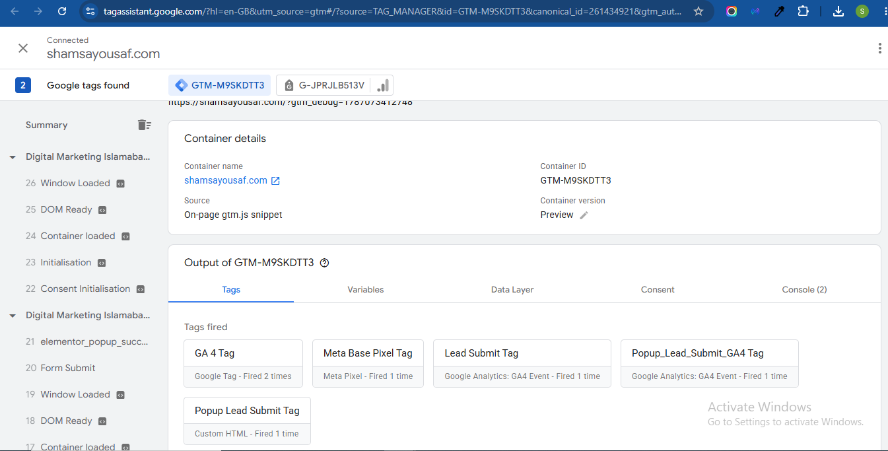
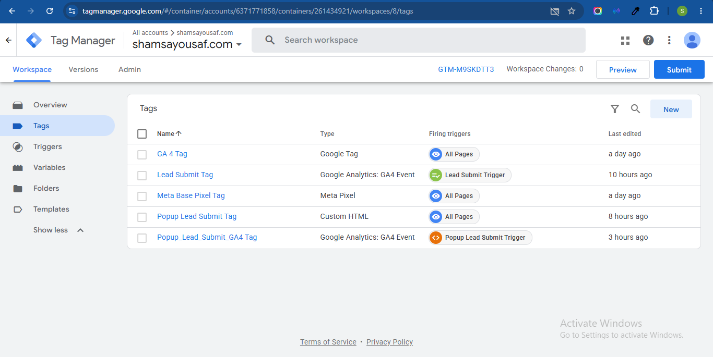
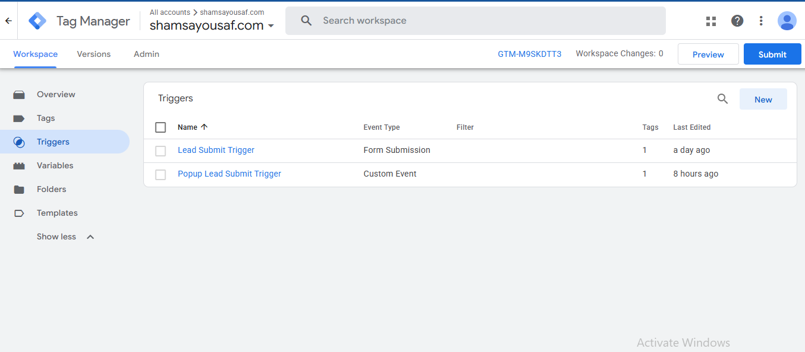
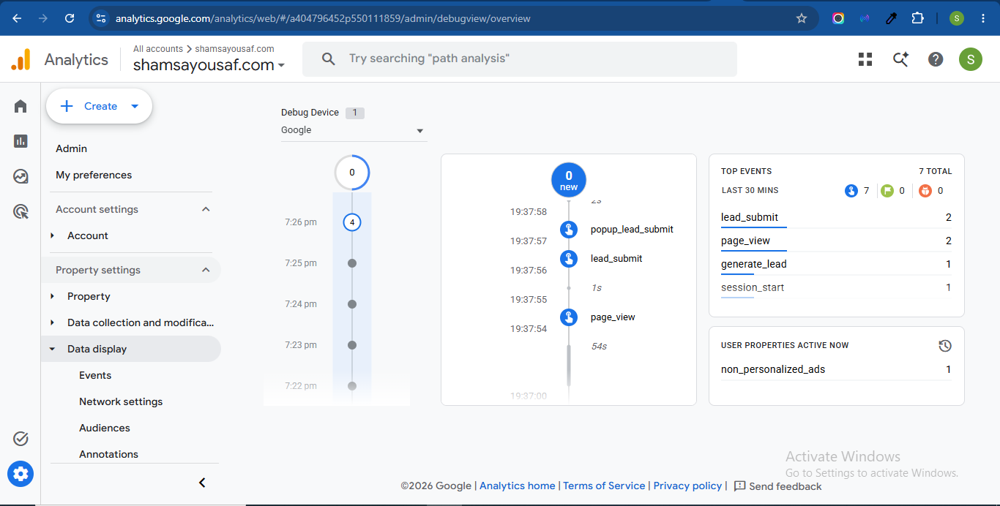
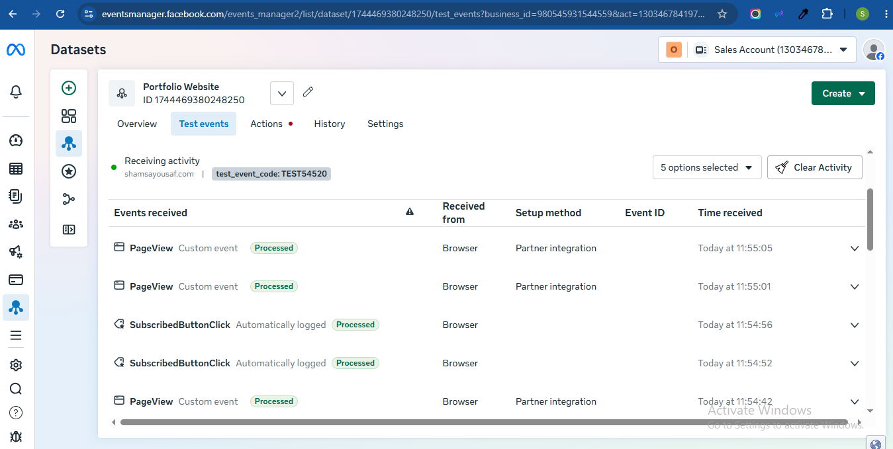
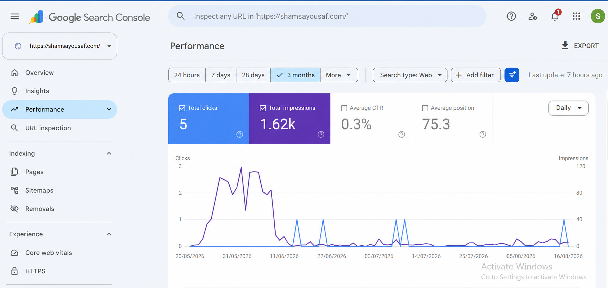

Shamsa Yousaf — Tracking & Measurement
I unify Meta Pixel, GA4, GTM, and GSC into one clean, verifiable measurement system — and instead of asking you to trust that, I hand you the dev tools and let you watch it work in real time.
Explore Live Demo →What you'll verify
Demo journey
No login, no access request, no tutorial pacing — you already know these tools. This just points at what to look for.
collect and facebook.Build decisions
The main contact form fires a single lead_submit event with service_type as a parameter, instead of splitting by service — the service is a detail about the lead, not a different action. The popup capture is a separate entry point entirely, so it fires its own event rather than being folded into the main form's numbers. Two events, because there are genuinely two different places someone can convert — not because the same action got split.
GA4 reports to me, but Meta's ad algorithm can't read GA4. The Pixel feeds a completely different audience, so it needed to speak Meta's own standard event language.
A click doesn't confirm the form succeeded. The trigger fires on confirmed success, not on intent.
So a broken redirect doesn't cost me a real lead. Two independent signals, either one is enough.
"Once per page" isn't enough — a refresh creates a new page load and would double-count the same person. I tested this on purpose: refreshed the thank-you page and confirmed in GA4 DebugView that a second event didn't fire.
Static proof
A live demo can fail for reasons that have nothing to do with whether the tracking works. This is the fallback layer, so the claim survives even if the demo doesn't load.





GSC — the honest one
GSC isn't inspectable live the way GTM, GA4, and Pixel are. Rather than fake a walkthrough, here's the real, verified property — as a screenshot, not a promise.

Connected and verified — early impressions are already coming in, position is still building.